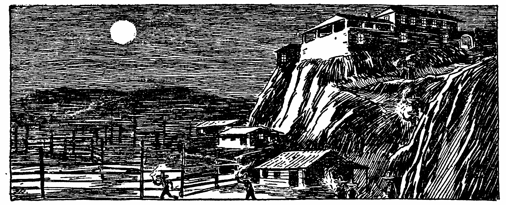
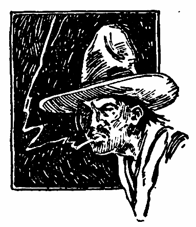
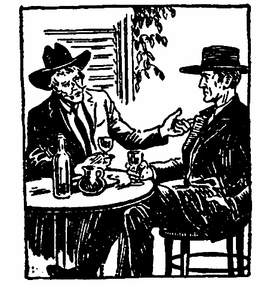
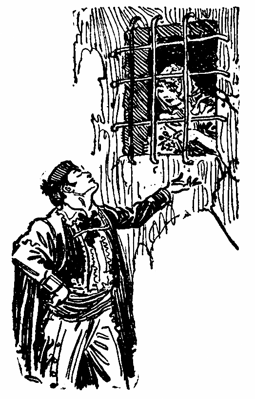
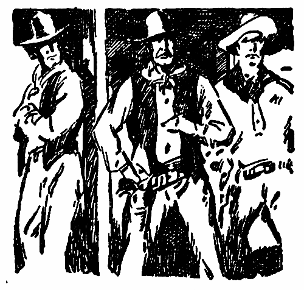
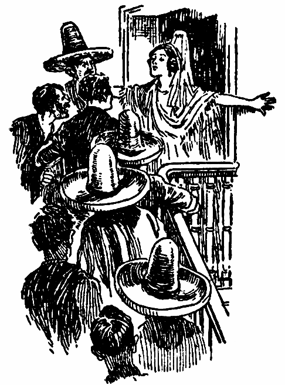

IN THE MEXICAN BORDERLAND, THE NAME OF THE WOLF WAS ONE TO STRIKE FEAR INTO MEN’S HEARTS. AND ONLY DESTINO KNEW WHY THE WOLF, WHO ONCE HAD ONLY ROBBED THE RICH TO GIVE TO THE POOR, HAD CHANGED TO A KILLER AND DESPOILER OF ALL
I did not know whence he came; I only knew that he stood at the little bar in Felipe’s cantina, a mug of warm beer in his hand and a ring of laughter in his voice. He was taller than most men of the Santa Clemente country.
His hair was tinged with red, and his devil-may-care, blue eyes sparkled with mirth, as he slapped one huge hand on his broad chaparejos, a resounding slap, which caused every man in the cantina to start with alarm.
“Ha, ha, ha, ha, ha!” he laughed loudly. “By the saints, you are a jumpy crew! Is it because I speak of El Lobo? It is? Are ye afraid of a name? Ha, ha, ha, ha, ha!”
He crashed his mug on the bar and bade Felipe fill it again, with one for each of us.
“Faugh!” he grunted with disgust. “The beer is warm and the world is warm! And when I speak of El Lobo ye shiver. I wish I could find somethin’ that would make me shiver.”
“Perhaps El Lobo—” began Emilio, who owned the little Rancho Sereno.
“El Lobo?” The big man laughed again, until the cobwebs on the rafters danced a jig. “The Wolf? And why, my friend? Are you afraid of a name? Drink a toast with me—” he lifted his mug above his head and laughed again—“to the day when I clip the brush from a cowardly animal—El Lobo!”
We drank, but with a fear in our hearts. And El Lobo was a name to strike fear. For five years he had been in the borderland, and no man knew where he would strike next. Rumor had said that the man was insane.
He had never come to Santa Clemente. Perhaps there was little to bring him. We were not a wealthy community. Except for Don Roberto Aliso, who owned the Rancho del Aguila, the Ranch of the Eagle, the valley of the Santa Clemente would make sorry pickings for El Lobo.
For three years El Lobo had been but a—what shall I call him? He robbed many, it is true, but only the rich. And he gave to those in need. No poor man need guard his flock against El Lobo, at that time. In mysterious ways gold came to the Church, and it was whispered that it came from El Lobo. Quien sabe?
Then the gold ceased to come, and the poor suffered with the rich. And not only did El Lobo rob. He killed. Madre de Dios, the man had no compassion!
But Don Roberto Aliso was not afraid of El Lobo. The Rancho del Aguila was well named, the Ranch of the Eagle. It was like a castle of old Spain, high on the top of a hill, its red tiled roofs gleaming against the gray cliff behind it.
Don Roberto was rich, as men are accounted rich in Santa Clemente; rich and very proud. I should know this, because for years I have been an overseer for Don Roberto.
I have watched the Señorita Juana grow from a gangling, long-limbed child to the most beautiful creature in the whole Santa Clemente country. Don Roberto had sent her to the convent for education, but she had been back a whole year, and there was much speculation as to whom she would marry.
You have seen the yucca in bloom? Truly it is a thing of rare beauty, its tall, graceful head of flowery bells, fit to grace the garden of a king. Yet it is only of the desert hills, a princess of the desolation.
But below this graceful flower is a circlet of daggers, surrounding the stalk, as though a jealous nature had grown a defense against all intruders.
And the Señorita Juana was like the yucca—even to the circlet of daggers; for Don Roberto was a jealous man and guarded Juana well. Perhaps too well. Five of his riders were gunmen; hard-faced men from the north, who drank heavily, swore in great oaths against living where nothing ever happened, and took their pay. And it was good pay, too.
The Señora Aliso was a tall, gray-haired woman, kindly, but seldom smiling. Don Roberto was a hard man, but just. Perhaps he was just a trifle harsh with his family; but that is not the business of an overseer.
And this man at the cantina bar? None of us knew him. His horse, a pintado, drowsed at the hitching-rack, while its owner laughed at us for being afraid of a name. When he had gone for something to eat, Felipe gave him a name—“The Laughing Caballero!”
The name fitted him well. We drank a toast to him. Perhaps it was more of a prayer than a toast, because we liked him—and his great laugh.
Twenty miles east of Santa Clemente was El Sicomoro, the big rancho of Don Esteban Carillo. It was almost as big as the Rancho del Aguila, but the lure of the green cloth kept Don Esteban from becoming a rich man.
He was tall, thin, graceful, always the gentleman. Perhaps just a trifle too suave. His mustaches were always waxed to needle points, and he too laughed—but not like the laughter of the stranger. And where the stranger wore the plain, rough dress of an American cowboy, Don Esteban sparkled with the color and silver of old Spain. In dress, there was no comparison.
Don Esteban was a great friend of Don Roberto, and Don Roberto asked Don Esteban’s advice in many things. I knew that Don Esteban wanted Señorita Juana above all things, but I also knew that Don Roberto did not want Don Esteban for a son-in-law, because he knew that Don Esteban had many weaknesses. Perhaps Señorita Juana did not want Don Esteban. But that is not the business of an overseer, so I shall not venture an opinion.
Among Don Roberto’s gunmen was Peter Sleen, who was in fact the main one of the five. Sleen was a big man, quarrelsome, quick to anger. It was said that Sleen had killed men with his bare hands, but I do not know this for a fact, although it would be easy to believe. But I do know that the next day after the Laughing Caballero came to Santa Clemente, he rode to the Rancho del Aguila with Don Roberto and four of his men. And he laughed at me, as he rode into the wide patio.
“Ha, ha, ha, ha, ha! I have come to help guard thee from El Lobo!”
I was quick to see the black looks from the other gunmen, but did not understand what it was all about until Don Roberto called me to his room and told me the story.
“This new man will take the place of Sleen,” he told me. “His name is Destino.”
“But what of Sleen?” I asked.
“Sleen is dead, Pablo. These two met in Santa Clemente. Destino laughed at Sleen, who was not a man to be laughed at. Someone had told Destino that Sleen had been hired by me as a protection against El Lobo. Destino told Sleen that if such as he were able to keep El Lobo from the Rancho del Aguila, then indeed the man was not a wolf, but a slinking coyote. You know, Pablo, that Sleen was so fast on the draw that the eye could hardly follow his hand, but Destino was faster. He forced Sleen to drop his gun. Dios! And then he laughed.” Don Roberto shook his head, as though hardly believing what his eyes had told him. “He taunted Sleen for being a sloth on the draw, and offered to fight him barehanded.

“There was much difference in their weight. And Sleen was reputed a killer with his hands. But Santa Clemente will never forget that fight, Pablo! In the middle of the street they fought. Sleen, his great shoulders hunched, his hands extended, as he tried to grasp Destino.
“Dios!” But it was no use. Once he tore the sleeve from Destino, and all the while the fists of the tall man beat a devil’s tattoo in his face, until Sleen did not look like a man. It was just smash, smash, smash! Sleen’s face looked like the mud beneath the hoofs of a running horse—thud and splatter.
“Flesh and blood cannot stand it, Pablo. Destino slipped, and Sleen fell into him, grasping him with both hands. It was what Sleen had wanted, to get his vise-like hands on this laughing devil. You know how strong Sleen was, Pablo. They came to grips and Destino laughed; laughed joyfully, I tell you. Then he tore Sleen’s grip loose, heaved him high over his head and threw him headlong.
“We waited for Sleen to get up, while Destino leaned against a post and felt of his sore knuckles. But Sleen did not get up. It was a fair fight, witnessed by many people. Destino came to me and asked if he might take Sleen’s place.”
“And the others?” I asked.
“They saw the fight, Pablo. Sleen was never a favorite. And when it comes to fighting, Destino is worth more than all of them.”
“I pray to the saints that no fighting will come,” I replied. “El Lobo and his bandits know better than to try and raid this rancho, Don Roberto.”
“Do they?” Don Roberto smiled grimly and turned to his desk, from which he took a piece of paper. “Pablo, you do not read; so I will tell you what this paper says. It is from El Lobo, and came yesterday.” And he read out:
“To Señor Aliso—a warning. You will deliver ten thousand pesos in silver, in person, to a man who will meet you at the highest point of the San Sebastian trail at noon on the tenth day of the present month. Go alone. Comply with this request, or suffer the consequences. I demand but once. El Lobo.”
“And what will you do?” I asked when he had finished.
“I haven’t ten thousand pesos to throw to the wolves.”
It was not for me to offer advice to a Don. At any rate he did not ask me for advice. I left the room and went down the flagged walk to the patio gate, where I found Juana, one hand resting against the wall, as she peered across the patio toward the men’s sleeping quarters.
I halted to listen. A man was playing a guitar and singing. Madre de Dios, what a voice! He was singing in English, and I understand but little, but it was a love song. No man can put that much feeling in his voice unless he sings of love. I did not move until he finished. Juana turned slowly and saw me.
“Who is he, Pablo?” she asked. “The singing man?”
“I am not sure, señorita, but I think it is Destino, a new man, whom your father, Don Roberto, hired today.”
“Destino? What a queer name, Pablo. It means Fate.”
I had not thought of that, but I said, “But he is an American, I think, and they have strange names. He takes the place of Sleen.”
“Of Sleen? Oh, I dislike Sleen, Pablo. Anyone would be welcome in his place. Sh-h-h-h! He sings again.”
I saw her white hand tighten on an ivy stem, but could not see her face, as he sang an old love song of Spain, sang it softly, plaintively, as though beneath the window of his love. Don Roberto had come softly up behind us and listened to the song.
“It is Destino,” I said, when the song was finished.
“Laughs while he kills a man, and then sings of love,” said Don Roberto thoughtfully. “He is a man, Pablo. Juana, my daughter, the night grows cool.”
She left us and went slowly back to the house. Cigarettes glowed from the bench beside the sleeping quarters, and the guitar strummed softly. Mockingbirds called sleepily from the bower of pepper trees which shaded the patio, and somewhere a mother crooned softly to her child.
On the far end of the patio, high up, on the thick adobe wall, showed the silhouette of a watchful guard, his sombrero and shoulders clearly etched against the sky. Another watched from the south side, watching toward the land of El Lobo.
“He can never come here,” I said, speaking my thoughts.
“One never knows,” said Don Roberto. “El Lobo needs ten thousand pesos, and when he is in need——”
Don Roberto did not finish, but turned away. Such was the fear of The Wolf.
A guard called a warning from the wall. Three horsemen were approaching from the north. Don Roberto came back and went to the main gate. The riders were Don Esteban Carillo and two of his men.
They were made welcome for the night, as the hospitality of the Rancho del Aguila was proverbial. It was an hour later that Don Roberto sent for me, and I found Don Esteban with him. There were many empty bottles on the table.
“Pablo,” said Don Roberto, “this Destino spoke to you as we rode in, did he not? What do you know of him?”
I told him what Destino had said at the cantina of Felipe. Don Esteban shook his head.
“I would not trust this man,” he said. “He is a stranger. I can furnish you a dependable man to take the place of Sleen. I furnished these five men to you, Roberto. They have proved their worth, and this stranger may not work in harmony with them. You cannot afford to take any chances.”
“Perhaps you are right,” nodded Don Roberto. “But I have taken a fancy to this man, Esteban. Remember he defeated the big Sleen in a fair fight. Pablo, find Destino and bring him here.”
I had little trouble in finding Destino. He was near the door as I came out, the guitar under his arm. His teeth flashed white in the moonlight, as he said, “My friend, I seek the ladies.”
“And for what?” I asked.
“That they might share in the music. Madre de Dios, do you think I would waste my songs on those dolts, whose minds are never higher than the brim of a mescal glass?”
I told him Don Roberto wished to see him; so he laughed softly, tucked the guitar tightly under his arm and bade me precede him. They were drinking more wine as we came in. Destino swept off his sombrero, stepped aside from the door and leaned against the wall.
“You sent for me, Don Roberto?” he asked.

“Yes, Destino. Don Esteban is of the opinion that I was hasty in bringing you to the Rancho del Aguila. Perhaps he is right. It is not safe to deal with strangers. And you are a stranger.”
“That is true,” said Destino softly. “I have none to speak for me.”
“Why did you come to Santa Clemente?” asked Don Esteban.
“Why?” Destino laughed boldly. “It is no secret, señor; I came to try and kill El Lobo.”
“To try and kill El Lobo? A fool’s errand, my friend.”
“Perhaps I am a fool.”
“No doubt.” Don Esteban poured himself a drink. “If you were not a stranger in this country you would not say these things.”
“Familiarity with danger would not make me a coward, señor.”
Don Esteban flushed hotly.
“Peace,” said Don Roberto. “We will not quarrel. At least the man is no coward, Esteban. Stranger he may be, but a stranger unafraid. Go back to your quarters, Destino. You are no longer a stranger.”
Destino bowed low to both of them and went away. Don Esteban shook his head.
“Something tells me that the man is dangerous, Roberto. After that letter, demanding ten thousand pesos, you must know that El Lobo has his eye on this rancho. And who knows where and how he will strike? The man does not work alone.”
“We shall see, Esteban. There will be no bag of silver at the top of the San Sebastian trail tomorrow. If El Lobo wants meat he must fight for it, because I will never butcher for a wolf.”
I do not know what else was said on the subject, because Don Roberto dismissed me, but it is my opinion that they talked of Juana. Don Esteban was in a vile humor the next morning, but it may have been because of too much wine.
The Señorita Juana was not yet of age, although nearly. Don Esteban and his men were ready to leave, when little Rafael, the son of one of the guards, came running to Don Roberto with something clutched in each hand.
They were alike, two rolled papers, tied with string, and to each was attached a stone the size of an egg. The child had found them inside the patio.
Don Roberto’s face paled slightly as he unrolled one of them and scanned the writing. Swiftly he unrolled the other, but after a glance he handed it to Don Esteban, who read it through and swore with a great wonder in his voice.
“Listen to this,” he commanded, and read aloud:
“To Señor Esteban: Too long have you enjoyed the undivided prosperity of El Sicomoro. I will come soon. El Lobo.”
Don Esteban crumpled the note in his hand, his lips shut tightly as he looked around at the men of the rancho. Then Destino threw back his head and laughed, as though it were a huge joke. Don Esteban glared at him and his fingers twitched at the knife hilt in his sash, but Destino still only laughed.
“The man must be mad,” muttered Don Esteban, and I saw two of the gunmen make the sign of the cross. Don Esteban turned to Don Roberto.
“And is your message the same, Roberto?”
“Another warning, telling me that unless I deliver the ten thousand pesos he will take what I hold more dear than money.”
“Juana?” whispered Don Esteban, and Don Roberto nodded.
“What will you do, Roberto?”
“What would you do?”
“God knows. Money is little compared with safety.”
“True. But if I pay once, I pay always, Esteban. The Wolf has an appetite.”
“Pay nothing,” advised Destino. “Let The Wolf come, señor. We will nail his skin to the patio door.”
Don Roberto smiled, “At least you are not afraid, Destino.”
“Why be afraid? We could defy an army, señor. Let The Wolf howl in the hills until his throat aches.”
Don Roberto nodded and asked me to find the guards who had watched from the walls. I brought them to him but they swore that no one had come near the rancho. He showed them the messages, of which they knew nothing.
“Sleeping fools!” snapped Don Roberto. “You deserve many lashes. Perhaps it will serve to keep your eyes open in the future.”
“Pardon, señor,” said Destino. “Possibly the guards are not at fault. From the rock of the eagle, a man with a good arm might throw that stone to the patio. Men would not look that way, because no danger could come from that direction.”
“That is true,” nodded Don Roberto. “It is possible to scale the other side of that cliff, and the stones were found at the far side of the patio. Tonight I will have a man on the cliff.”
“But could anyone assault the rancho from the cliff?” asked Don Esteban.
“No. The overhang of the cliff prevents it. From the top of the rock, one might see the end of the patio, but it would be impossible to attack from that quarter.”
There was little more talk. Don Esteban and his men mounted and rode away swiftly, anxious to get back to El Sicomoro and prepare a defense. We had been talking near an overhanging balcony, and after Don Roberto had gone away, Juana came to me.
“Pablo, what is all this about El Lobo?” she asked. I tried to evade the question, but she was insistent; so I told her all about it. She had been on that balcony and heard Don Esteban read his message, and had heard Don Roberto explain what his was about.
“Don Esteban wishes to marry me,” she said. “I must talk to someone, Pablo. My father has told me this, but has not given Don Esteban his consent—yet. My mother admires Don Esteban.”
“And you, Juana?” I asked.
“He is nearly as old as my father, Pablo. He drinks much wine to keep his heart warm and pays the toll of several gambling houses.”
“Perhaps that is true, Juana.”
“It is true,” she said softly. “Pablo, you are not young, but you were young once, and at that time would you have married an old woman?”
“No, Juana. Youth is for youth. It is not natural for May to wed with December. They are of different seasons.”
“And El Lobo is old,” she sighed. “He threatens to come and carry me away. If I marry Don Esteban, I will have an old husband, and, if I wait for El Lobo to carry me away, I will have an old master. Is there no youth in the world, Pablo?”

She looked at me so distressfully that I must laugh, and she laughed with me. Then I looked up to see Destino standing beside a corner of the wall, looking at us. Juana looked at him and they both smiled. It was the first time she had ever seen him.
“Pardon, señorita,” he said softly. “Your laugh brought me here. It is good to hear you laugh.”
Juana blushed and turned away, but in two strides he was at her side, imploring her not to leave.
“Destino,” I said, “this is the Señorita Aliso, the daughter of Don Roberto.”
She turned and looked at him, as he made her a sweeping bow.
“Señorita, perhaps it is not just that a hired gunman speak with a daughter of a Don; but I am named Fate. And who shall say that fate does not speak to all?”
“Fate is something we cannot evade,” she said seriously.
“It is useless to try, señorita.”
“And who may know whether their fate is good or ill?”
Destino laughed, “None, señorita. One must take fate as it comes, finding out to their gladness—or sorrow.”
They looked at each other and smiled. I am old enough to have a little wisdom; so I excused myself and went away. I knew that Don Roberto would not approve of a hired gunman talking to Juana, but what was that to me. I am an overseer, not a duenna.
Later that day I went with Don Roberto to the far side of the cliff, where we searched for signs of the man who had thrown the messages. It was difficult for men to reach the top of the cliff, but we managed to make the climb.
We sat on the edge of the cliff and scanned the country. Far below us we could glimpse a part of the open patio and some of the stables, but it would be impossible for anyone to approach the rancho from over the cliff.
“You worry about El Lobo?” I asked.
“Yes, Pablo,” he replied. “There is much wealth here, wealth enough to tempt any man. In fear of raiders I have sold most of my herds, as you know, and the money is here. And El Lobo is bold and cunning.
“Pablo, you have seen this Destino; what do you think of him? Is he only a loud laughing braggart, a man whose gun is for sale, or is he something else? Esteban mistrusts him, and Esteban is not one to see danger in a shadow.”
“Why does Esteban mistrust him?” I asked. “Does he think that Destino is in any way connected with El Lobo?”
“Madre de Dios! That is an idea, Pablo! If El Lobo had a man within the walls—And Destino laughed at Don Esteban’s message from El Lobo. It makes me wonder.”
“But he says he came to kill El Lobo, señor.”
“Quite naturally. Let us go down.”
I did not know what Don Roberto meant to do, until he had instructed the other four gunmen to seize Destino, disarm him and lock him in a room of the sleeping quarters. Destino did not attempt a defense, when Don Roberto accused him of being a spy for El Lobo.
Neither did he laugh. For once, it seemed that Destino did not see any humor in the situation. The room had but one small window, and the door was of heavy oak, fastened with a huge padlock, of which I had a key.
Don Roberto seemed relieved after Destino was safely locked in the room. It was not a thing to be kept secret, and Juana heard of it. She came to me and I told her of what had been done.
“Your father says that Destino is a spy for El Lobo,” I told her.
“A spy for El Lobo? Oh, no, Pablo, that cannot be.”
“Perhaps not, Juana. It is your father’s belief, and he is master here.”
I know she did not believe Destino guilty, and what maid would after knowing the man and hearing him sing.
“May I speak to him through the window?” she asked. “No one will know it, except you, Pablo.”
“Not even I, Juana. It is not good to know too much.”
I went about my duties, forgetting that she had conversed with the prisoner. And what passed between them through that deep, narrow hole of a window is no affair of mine, because an overseer’s duty is not that of eavesdropping.
But El Lobo did not get his silver pesos that day, and those who knew of his demand talked seriously over what would follow Don Roberto’s refusal to pay tribute.
The four gunmen drank much tequila and quarreled over their card game, but seemed more at ease with Destino under lock and key. I spoke to him through the little window later on in the afternoon. I wished to find out what I could for Don Roberto.
“Do you think El Lobo will come here?” I asked him.
“He promised, did he not, Pablo?”
“But how can he expect to force his way in, Destino?”
Destino laughed, “I alone know, Pablo. And they have locked me up and taken away my gun.”
“And you know how he will get here?” I asked.
“I can guess, my friend.”
“Then you are a spy of El Lobo?”
“Spy? No, Pablo; I am more than a spy.”
Further than this he would not say. I went to Don Roberto and found him with Juana. I did not mean to listen, but the door was ajar. It seems that someone had seen her talking with Destino and reported it to Don Roberto, who was furious.
“You have too much freedom,” he told her angrily. “I have allowed you to associate with everyone, to have your own way. And you come to plead for a spy! I find you talking with him—to a hired gunman, a killer. It is time you were married. Last night I refused Don Esteban’s suit and he rode away broken-hearted. But he said he would come again, and when he does——”
“I shall not marry him,” said Juana firmly. “He is an old man.”
“Old man? I am not an old man, and he is a year younger.”
“But you are my father.”
I slipped away and went to my own quarters, without telling Don Roberto what Destino had said. If Destino was more than a spy, what was he? He was not El Lobo. Men had seen El Lobo, and in spite of his mask they were able to see that the man was gray of hair. This was when he robbed only the rich, and men do not grow younger with the years.
I do not know the outcome of the argument between Juana and her father, but I found her later, sitting on a vine-covered bench in an angle of the patio wall, crying. The sun was low in the west and the shadows of the patio walls had painted the Rancho del Aguila with a brush of softest blue. I did not speak until she had looked up at me.
“Pablo,” she said wearily, “are you a friend?”
“A friend, Juana? Did you ever question my friendship?”
She shook her head. “I do not want to, Pablo. You have been more like one of the family than a servant, and I know you are loyal to my father.”
“I am, Juana,” I replied.
She got up from the bench and came closer to me.

“Pablo, my father has forbidden me to speak to Destino again. He says I shall marry Don Esteban. And listen closely, Pablo: I overheard those four men talking—the ones who carry guns all the time. Tonight when food is taken to Destino, the door will be left unlocked. Do you know what that means, Pablo?”
I knew. When the prisoner walked out he would be shot and killed.
“Is this your father’s order, Juana?” I asked.
“I do not know, Pablo.”
“And why do you wish to save him? If this man is a spy of El Lobo, he deserves death. And what is he to you, the daughter of a Don?”
As if in answer to my question came Destino’s voice, singing through the little window of his cell. The Rancho del Aguila was stilled. Even the mockingbirds ceased calling, “Peter, Peter, Peter,” while he sang. A little sheepdog puppy, which had been chasing its tail for many minutes, stopped suddenly and sat up on its haunches, one ear cocked toward the sound of the song.
The song died away and I looked at Juana. Her eyes were lifted toward the purple of the setting sun, a smile on her lips. Just now she was not at the Rancho del Aguila.
I moved softly away, leaving her there alone. I went to the kitchen, where Rufo, a man of great girth, presided over his pots and pans. He scowled at me, because not even an overseer might give him an order.
“I but come to beg a favor, Rufo,” I told him. He tugged at his mustachio and considered me more kindly, nodding slowly.
“We have a prisoner,” I said. “They say he is a spy of El Lobo. If any come to get food for him before everyone else is fed, refuse them, Rufo.”
“That is not a big favor, Pablo,” he said. “It is granted.”
I thanked him and went away. It would be mealtime in a few minutes. Already the men were preparing. Juana whispered to me, as I passed beneath a low balcony——
“Pablo, are you a friend?”
“When they are eating,” I whispered. “It is a fool’s task, and there is no place for him to hide; so I will send him here.”
I knew what it would mean to play false with Don Roberto, but I am not a young man, and what is a few years, more or less? And when the patio was empty, I unlocked the door and let him out. He gripped my hand, when I told him where to go, after which I secured an iron bar and managed to draw the heavy staple from the door. It was a clumsy attempt at making it appear that Destino had escaped, because the man never lived who could force it from within.
Then I went to my meal, listening for the first alarm, which would brand me a traitor. Benito, who had charge of the stables, carried the other key, and he was always the first at table, which would absolve him of all guilt.
It was possibly an hour later that the escape was discovered. The moon had not yet risen and the night was dark, except for the stars. There was great excitement. The guards had been changed, as soon as the night guards had eaten their supper.
Don Roberto swore bitterly and questioned the day guards, who must have been on duty during the escape, but they swore that nothing had passed the gate or the walls. Don Roberto examined the lock, and by the light of the lantern I could see his lips shut tightly.
You may be sure that I kept in the background, realizing that I could not lie to him.
“The man has been released,” declared Don Roberto. “He is within these walls, possibly armed. He is a spy of El Lobo, and deserves no mercy. Light all the lanterns. We must take this man, dead or alive.”
There was great scurrying, as the men brought lanterns and guns. I wondered where Destino was hiding, and it was in my mind to leave the rancho. After all, a man has only one life. I made my way to the far end of the patio, watching the bobbing lanterns, as the searching party began their work. They split in two parties and the lanterns threw their shadows in grotesque shapes on the walls. There was much loud talking and calling from one to another, as though trying to bolster their own feelings. Destino had killed Sleen with his bare hands, and was no mean opponent for all of them.
For several minutes I leaned against the wall of a building. I could see the silhouette of a guard on the wall, standing in an attitude of attention. Suddenly he swayed slowly, and I thought he was about to fall.
Then he went slowly to his knees, and I thought he was but lowering himself from some danger without. A moment later I heard the thud of a falling body, and the space on the wall where he had stood was empty.
I ran across the patio and found him lying near the wall, crumpled in a heap, his gun flung aside. His heart was still beating, but the man was unconscious. I ran back to the center of the patio, not knowing just what to do.
The other guard was on his hands and knees, striving to cling to the wall. I called his name, but he did not answer. Then he slumped forward and fell to the ground. He, too, was unconscious.
In a flash it came to me that someone had poisoned the guards. I forgot the escape of Destino, as I raced for the house to sound an alarm. The searchers were grouped in the central room, which was hazy with oil smoke.
“He is in this house,” declared Don Roberto. “Two of you guard the stairs, while the rest of us search up there.”
Upstairs were the rooms of Don Roberto and Señora Aliso and of Juana. Two of the four gunmen stopped at the foot of the stairs, while the rest surged ahead. I tried to reach Don Roberto, but there were too many men, and the stairs were narrow.

By the time I had managed to reach the upper floor, search had been partly made. Over the heads of the crowd I could see Juana, a pale-faced, white-robed figure, standing against the door of her room, arms outstretched, as though forbidding them to enter her room.
But Don Roberto shoved her roughly aside and flung the door open. Bending low and shoving with all my strength, I managed to worm my way through the crowd, many of whom cursed me for walking on their feet, and reach the doorway.
Don Roberto was just inside the room, one hand clinging to the sleeve of Juana, while in the center of the room, a grim smile on his lips, stood Destino. A revolver butt protruded from the waistband of his trousers, but he made no move to draw it.
“You are not only a spy, but a cowardly spy,” declared Don Roberto. “Hiding in the room of the señorita.”
“Don Roberto!” I fairly yelled in his ear. “Listen to me, I implore you.”
He whirled on me.
“Listen to you—you traitor! You let this man escape, Pablo. There were only two keys, and I took one from Benito when we locked this man in his cell. Your case will be judged later.”
“But Don Roberto, the guards—” And this is as far as I got. He struck me full in the face, knocking me down.
I was not unconscious, but badly dazed, and I do not know exactly what happened for the next few moments. I seemed to hear a shout, a babel of voices, a shrill command. It was like the sounds one hears in a dream.
Then the mists faded away and I came back to reality. Don Roberto was backed against the wall, and a man was holding a rifle muzzle against his body. Another had an arm flung around Juana, holding her tightly.
Standing just inside the doorway was a tall man, dressed in black garments, trimmed in silver. His sombrero was also of black, and a black silk mask concealed his face and throat.
In his right hand he dangled a heavy revolver, as he looked around through the eye-holes of his mask.
“So you decided not to pay, Don Roberto,” he said. His voice was husky, as though with a bad cold. “I have come to teach you obedience. Tonight I take everything of value at the Rancho del Aguila. Perhaps it will serve as a warning to others that El Lobo keeps his word.”
My eyes flashed to Destino, who still stood in the same position, although he was not smiling now. His elbow covered the butt of his revolver.
“Are you El Lobo?” asked Destino.
The eyes behind the mask studied him thoughtfully.
“I am El Lobo.”
“You lie.” It was not said in anger, it seemed, nor was Destino’s voice raised.
El Lobo’s body stiffened.
“You dare to say that to me?” he questioned.
“El Lobo is dead,” said Destino. “He has been dead for two years. And you killed him.”
“Who are you?” El Lobo’s voice came in a tense whisper.
“Destino—fate—you murderer!”
As swift as the blinking of an eye, Destino’s arm twisted at the elbow and a spurt of flame leaped from his revolver straight at El Lobo. I blinked my eyes again and El Lobo was sprawling toward the floor. Twice more the orange-colored flame leaped from the gun muzzle, and I saw two more men go down—the one who had held the rifle against Don Roberto and the one who had held Juana.
Destino leaped for the door, and I saw him pick up the gun of the man who had called himself El Lobo. Then he was gone, leaping down the stairs.
I staggered to my feet, choking from the powder fumes. Don Roberto had taken Juana in his arms and was staring down at the dead men.
“His mask, Pablo!” exclaimed Don Roberto hoarsely. “Take it off!”
Stooping over, I tore the mask from his face, disclosing the features of Don Esteban Carillo! Don Roberto cried out sharply, because Don Esteban had been his friend.
“The guards were poisoned,” I told Don Roberto. “I tried to tell you, but you struck the words from my mouth.”
“Forgive me, Pablo,” he said, whispering his words, as though afraid that the dead might hear. “I have been a fool. The gunmen were in the pay of Esteban.”
“And they poisoned the guards tonight,” I said.
We went slowly down the stairway, not knowing what was taking place down below. One of the gunmen sprawled on the steps and Don Roberto lifted Juana over him.
Out in the patio we found another gunman, dead. Destino was standing against the wall, an empty gun in each hand, a laugh on his lips. The forces of Don Esteban, of which there were few left, were far off across the hills, riding for their lives.
Destino came to Juana and held out his hands.
“One who trusted me,” he said slowly. “I will never forget.”
“And there was Pablo,” she said softly.
“Ah, yes. Pablo. But it was for your sake, señorita.”
“And I can only ask forgiveness,” said Don Roberto humbly. “It is still a mystery, Destino.”
“El Lobo was killed two years ago,” said Destino. “The man who killed him took his name, and made it a thing of execration. El Lobo was not a murderer. He stole from the rich and gave most of it to the poor and to the church; keeping only enough to gratify his one great desire in life.
“For a year I have searched for this man who wore a false name. Always he has baffled me. But like fate I have followed him to his finish. I suspected Don Esteban. No man may lose as he has lost at gambling and still retain his El Sicomoro.
“I came to Santa Clemente and I saw Sleen. I knew him to be a cutthroat, and when I found that he was guarding you from El Lobo, I suspected that he was in the employ of El Lobo. The very fact that this rancho was inaccessible to attack, told me that it would be accomplished from within.
“And when those messages, attached to stones, were found in the patio, I knew I was right. They were placed there by Don Esteban or his men; one for Don Esteban, to cause him to share equally with you.”
“And that is why you laughed?” asked Don Roberto.
“I laughed,” said Destino softly, “because after all these months, I was about to revenge the death of my father, who had been a thief that I might study voice under the best teachers of Spain.”
And now I knew why he was more than a spy for El Lobo. He was a son of The Wolf. Somehow, like shadows drifting away, the men followed Don Roberto back to the house, leaving Juana, Destino and myself alone there in the patio. I do not know why I stayed, because it was not a business that needed an overseer. But I felt that I had had a part in it, and I was too glad to go away.
They were looking at each other, saying nothing. It seemed as though they were going to stare at each other forever; so I said, “Destino, they are all gone.”
“Except my friend, Pablo,” he said softly.
So I went away, too.